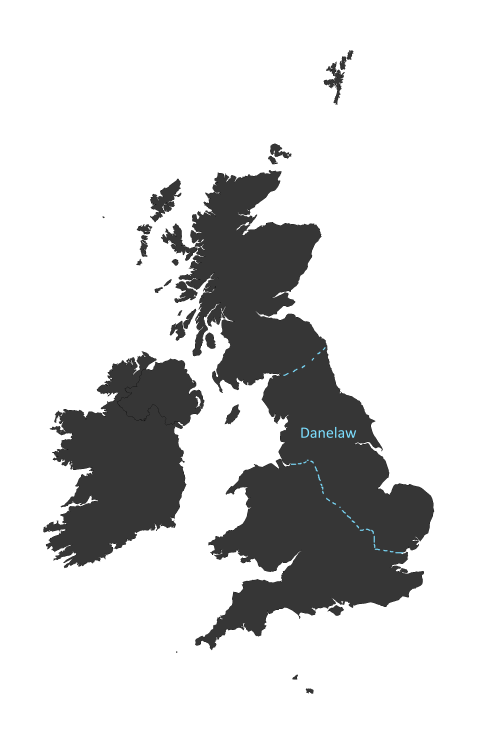
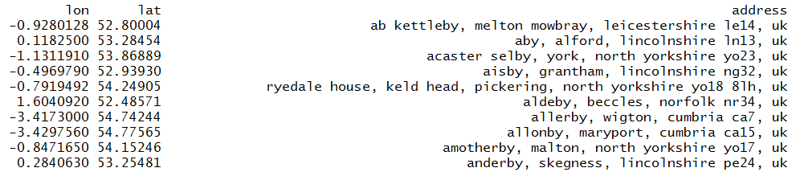

Recently Bob Rudis did a great blog post using R to spatially map the suffixes of German topographical placenames (towns and villages). The results are fantastic and many names show distinct patterns. For instance, the -berg suffix is most commonly found in the areas of Germany that contain large hills and mountains (Berg is German for mountain).
This post got me thinking about where I grew up in North-Eastern England. York to be precise. This is an amazing city to live in and it's impossible not to become enamoured with Roman and Viking history, as it is all around you. One thing you cannot help but notice is that a lot of the village and town names share common suffixes. I am very familiar for instance with all maner of -thorpes, (Woodthorpe, Copmanthorpe, etc.) and -bys (Thormanby, Haxby, Selby, etc.). Other names such as -toft are familiar to me because York's third most popular nightclub is on a hill called Toft Green. It's well known to us Yorvik types that these names come down to us from 'Vikings' and after Bob's post I did a bit more digging and wondered what other suffixes may be from Viking origins. In this post I shall show you how the language of the Vikings influenced our place names. At the end, I will show how I did it with code.
The Danelaw is commonly used to refer to the lands to the North and East of England that were colonized by various Scandinavian Viking groups from the 9th to the 11th centuries. The term actually has very specific legal definitions as it defines which parts of the country came under Dane laws contrasted to Mercian or West Saxon law. However, for our purposes we can think of it as the area of England that was occupied and settled by these Scandinavians.
For this initial investigation I decided to choose six suffixes that have been argued to be of Scandinavian/Viking origin. From this site belonging to the Yorvik Viking Centre and this one belonging to the Ordnance Survey the names I came up with were:
The exact origins of these names are still highly debated.
Here are the plots showing the distribution of placenames (villages, towns, etc.) of each of the suffixes.
Looking at these distributions there seems to be very strong evidence that -by and -thorpe have very strong Danelaw distributions - although -by also appears to have a big Isle of Man presence. Also -kirk and -toft seem to be mainly in the Danelaw albeit less frequently. I find the -thwaite distribution really interesting. It is confined to the Cumbrian / Lake-District area with a bit of spread into North Yorkshire. I am not convinced the -ness pattern is particularly Viking. It is possible that the Shetland and Orkney populations may be Viking but they could also be due to the Gaelic influence - I would have to do more reading to find out what's going on there.
After making the above plot I got curious about some other names. In this plot I search for places that began or ended with holm(e). When I was much younger I remember getting frostbite in a small place called Holme-upon-Spalding-Moor. This name comes from the Old Norse homr meaning 'small island'. Again we see the very striking Danelaw distribution:
Here I shall quickly go through the data and code. I got the data from The UK Open Gazetteer that contains approx 34,000 placenames of the British Isles. I took the places.csv file and put it into my working directory. I shall run through how I got the -by data into a map.
The first steps are to extract/filter the places from places.csv that end in -by and then paste the placename and district/county variable together. We use that to geocode, i.e. get the longitude/latitude of each selected location
<
library(dplyr) #for data carpentry
library(ggmap) #for getting geocodes
places <- read.csv("places.csv")
by <- places %>% filter(grepl("by$",name)) # by$ ensures we filter those members of places$name that end -by
by.names <- paste(by$name, by$countyname) #places.csv has a placename and district/county variable. Joining them together to help geocode.
by.geocodes<-geocode(by.names, output="latlona") #use ggmap package to get longitude and latitidue of each location.
<
The ggmap package is great but it sometimes needs TLC and manually checking random samples of results can be helpful. Check out Zev Ross's awesome blog for more details. The output looks like this:
You will notice that one location doesn't end -by. That geolocation was provided by the geocode but it was based on an initial -by name. We can now plot these longitudes and latitudes. I am using the very simple maps and mapdata packages.
<
library(maps)
library(mapdata)
png("byplot.png", height=3000, width=2000, pointsize = 80) #this is our output file
map('worldHires', c('UK', 'Ireland', 'Isle of Man','Isle of Wight'), xlim=c(-11,3), ylim=c(49,60.9), fill=TRUE, col="gray21", mar=rep(1,4)) #our blank map
points(by.geocodes$lon,by.geocodes$lat, col="cyan", pch=15, cex=.5) #add points - using abbreviated variable names (bit lazy)
title("-by", col.main="gray21") #add title
dev.off(dev.cur()) #clear plot
<
There we go - it was that simple! Just do that again for the other names we're interested in.
For more information please contact me via twitter. Also, for more visualizations, please visit my GitHub page